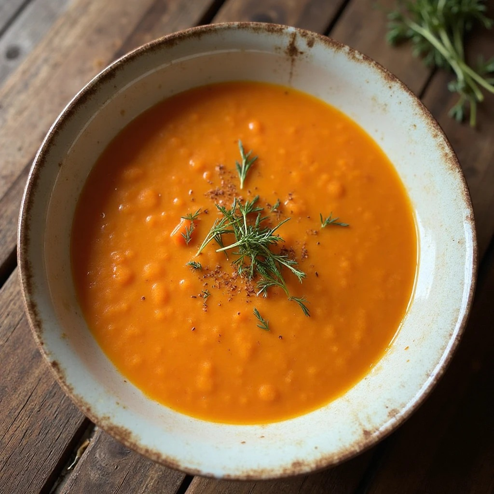
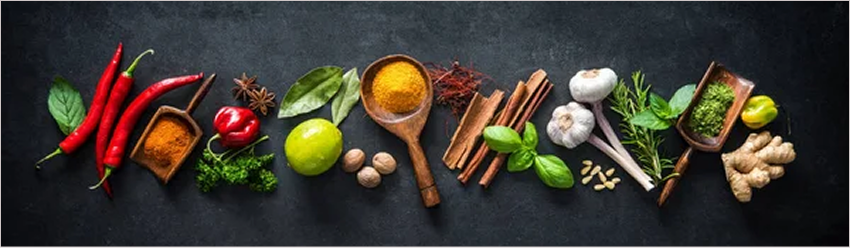

WE PRESENT OUR RECIPES

Main
Supreme chicken
An explosion of flavor. Stuffed chicken breast with spinach, feta cheese, bacon, and prunes...
Read recipe
Cream
Cream of Chicken
A simple and comforting dish of tender chicken in a creamy, savory mushroom sauce...
Read recipe

Creamy
Creamy Carrot Soup
A velvety and comforting soup made with fresh carrots, onion, garlic, and vegetable broth...
Read recipe
Basket
Basket of Bananas
Crispy plantain cups filled with a smooth and flavorful guacamole, topped with bits of pork rind...
Read recipeOUR GLOSSARY OF INGREDIENTS

88 INGREDIENTS
GLOSSARY
The glossary folder will help you learn about the most representative ingredients in our Guajira recipes, along with their history and traditional way... it's a good starting point.
Read glossary